Python · MoTeC i2 · Data Analysis · Telemetry · Performance Optimization | Nov 2025
Project Context
Personal development project focused on a custom telemetry analysis tool for iRacing data from Ferrari 296 GT3 stints at Laguna Seca. The tool processes MoTeC i2 CSV exports, supports interactive multi-lap visual analysis, and automates corner-level performance comparison. It is developed in Python with an interface for day-to-day engineering workflows.
Telemetry Analysis Tool
Main Feature
Objective: Turn raw MoTeC i2 telemetry exports into actionable performance insights through a dedicated analysis interface
Reads MoTeC i2 CSV exports and creates interactive plots for rapid telemetry review.
Corner-Level Intelligence
Detects track corners automatically and extracts comparable entry, apex, and exit performance indicators.
General Multi-Parameter Plotting
The interface reads CSV channels directly and overlays up to five parameters at once across selected laps to speed up first-pass telemetry review.
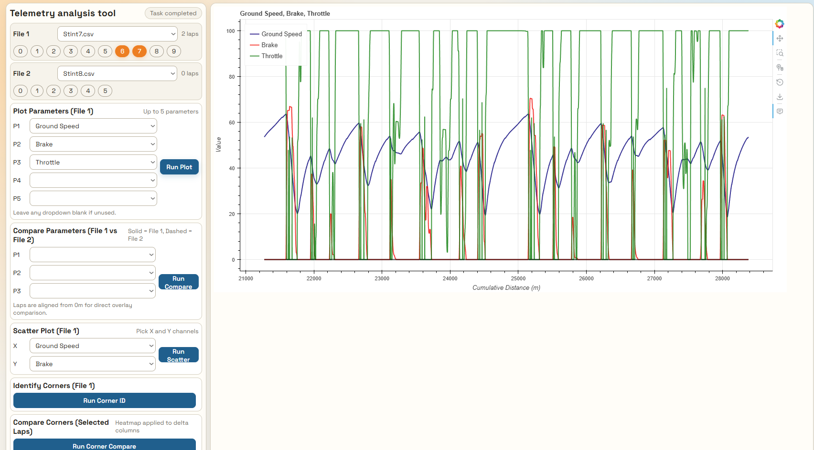
Interface for plotting up to five telemetry channels simultaneously over one or multiple laps.
Cross-File Lap Comparison
This mode compares laps from different files in a single view using up to three parameters, making stint-to-stint or session-to-session checks immediate.
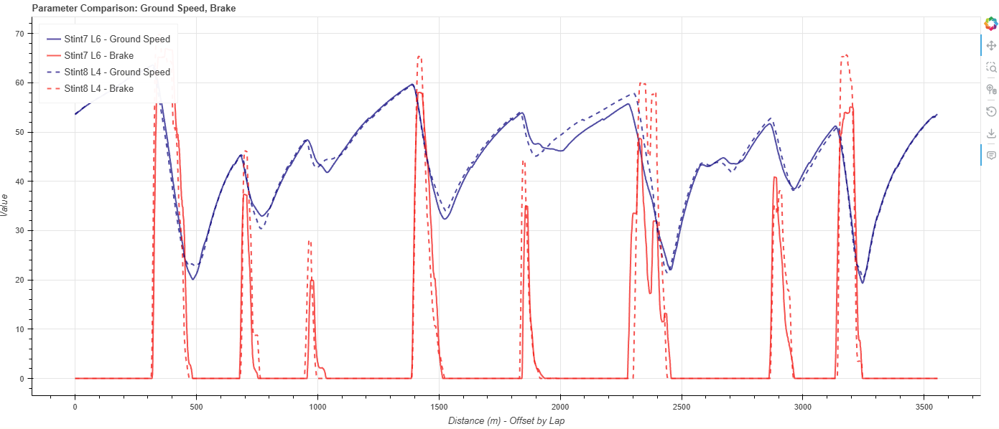
Direct comparison view for up to three parameters across selected laps and telemetry files.
Two-Parameter Scatter Analysis
Scatter charts reveal relationships between two selected channels for one or multiple laps, useful for spotting trends and consistency patterns.
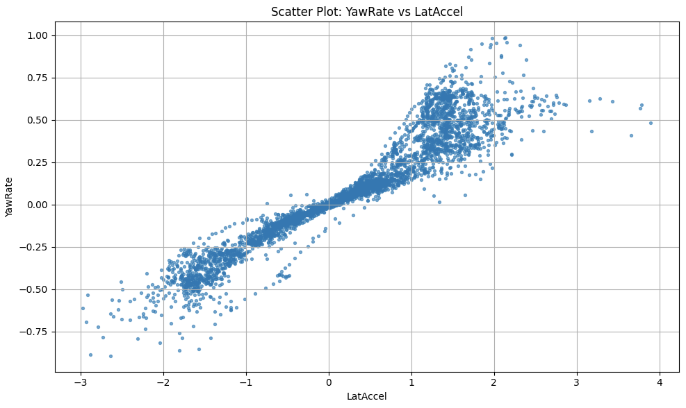
Scatter mode for exploring parameter relationships and identifying driving trends.
Automatic Corner Identification
The tool detects corners automatically and extracts key values per corner, turning full-lap telemetry into structured corner-level data.
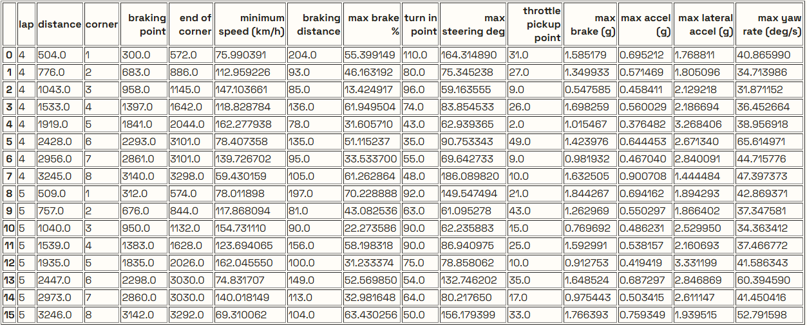
Automated corner detection and extraction of key metrics for each section of the track.
Corner Time Gain and Loss Comparison
With the extracted corner dataset, this view quantifies where time is gained or lost so improvement priorities are clear by corner.
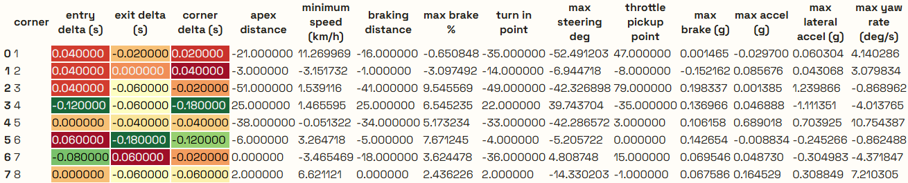
Corner-by-corner comparison highlighting where time is gained or lost between laps or stints.
Optimal Lap Generation
The final module builds an optimal lap from best microsectors for a chosen stint length and compares it against another stint benchmark.
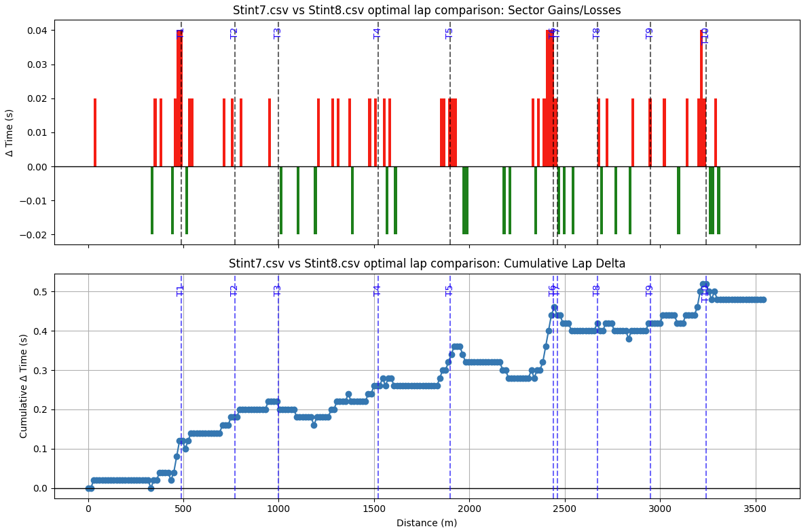
Microsector-based optimal lap generation for a stint with benchmark comparison against another stint.
Driver Performance Analysis
✓ Controlled Variable
Fixed vehicle setup
🔍 Analyzed Variable
Driver inputs and technique
📡 Tools
MoTeC i2 visual overlay
Corner-by-Corner Analysis
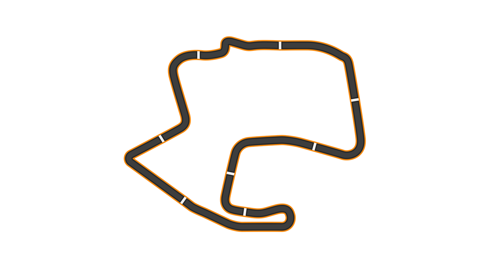
📊 Trace Legend
1:22.964
Colored Trace (Fastest)
1:23.617
White Trace (Slower)
0.653s
Improvement (0.78%)
Turn 1
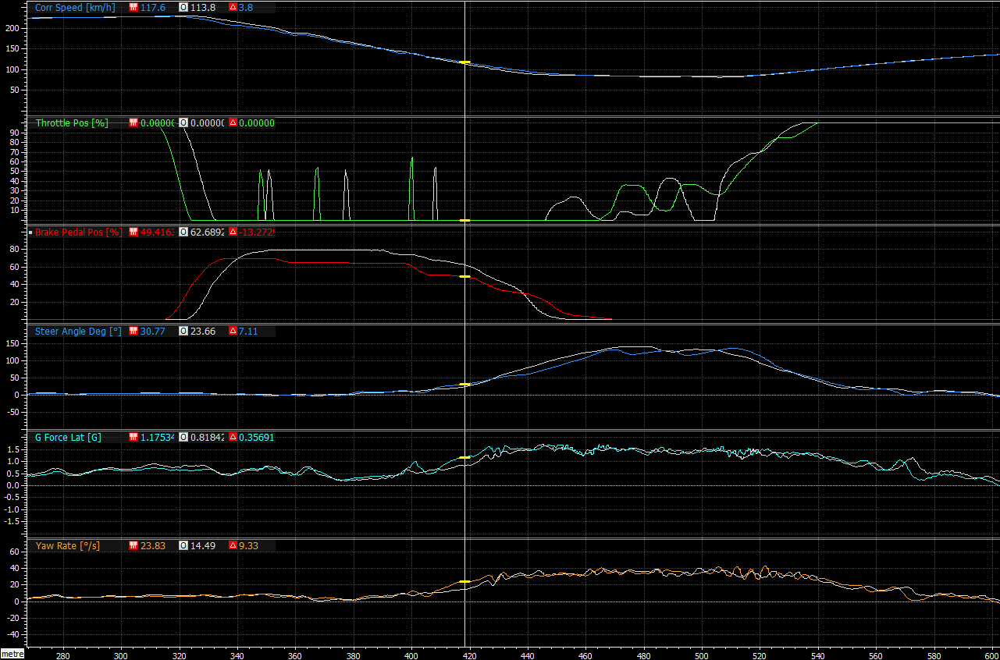
Turn 1 data comparison
Key Observations:
🚫 Braking
Faster lap brakes earlier but gentler, carries more speed into corner vs. slower lap's late 80% brake application
🔄 Mid-Corner
Better trail braking = increased rotation with same steering input. Similar minimum speed but reached later
⚠️ Exit Issue
Both laps show understeer on exit (increasing steering, stalled ~1.5G lateral). Throttle lift required
💡 Improvement Potential
Later, harder initial braking + better progressive release could optimize entry speed and rotation
Turn 2
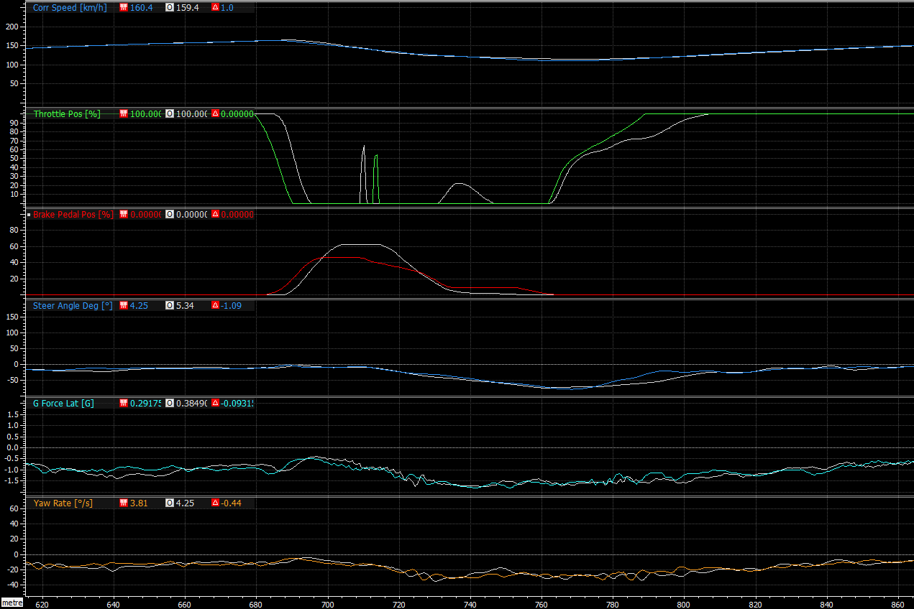
Turn 2 data comparison
Key Observations:
🚫 Braking Strategy
Faster lap uses longer brake duration → lower minimum speed → slightly faster exit. Both achieve similar rotation
🎯 Apex
Lower minimum speed enables better apex rotation, directly contributing to superior exit performance
✓ Exit
More confident exit: earlier full throttle + earlier neutral steering = better acceleration on following straight
Turn 3
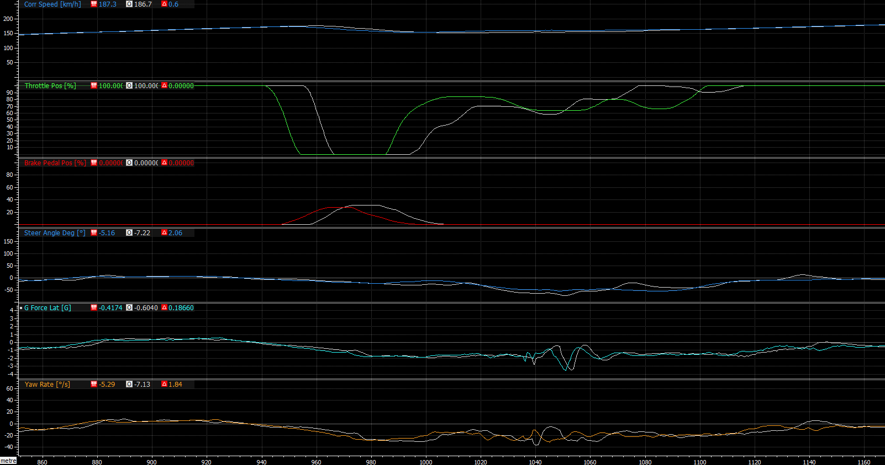
Turn 3 data comparison
Key Observations:
🔄 Turn-In Timing
Faster lap brakes simultaneous with turn-in (vs. after turn-in) → earlier and higher rotation
🎯 Earlier Apex Strategy
Despite long straight ahead, earlier apex works due to extracting necessary rotation early in corner entry
✓ Exit Performance
Earlier throttle application from earlier braking. Understeer present but advantage maintained through better execution
Turn 4
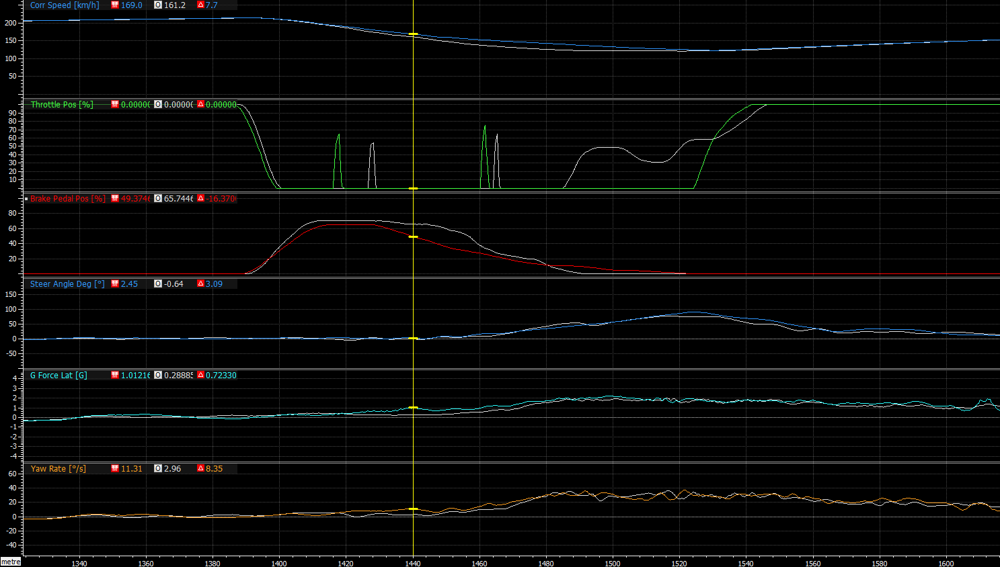
Turn 4 data comparison
Key Observations:
⚠️ Front Axle Saturation
Slower lap: higher brake pressure at turn-in saturates front axle causing entry understeer. Similar steering but vastly different G-force/yaw rate
🔄 Regressive Braking
Faster lap releases brake earlier → much increased rotation. Same minimum speed but better entry
💪 Throttle Confidence
Faster lap applies throttle later but more confidently—car already pointing right direction from superior rotation
Turn 5
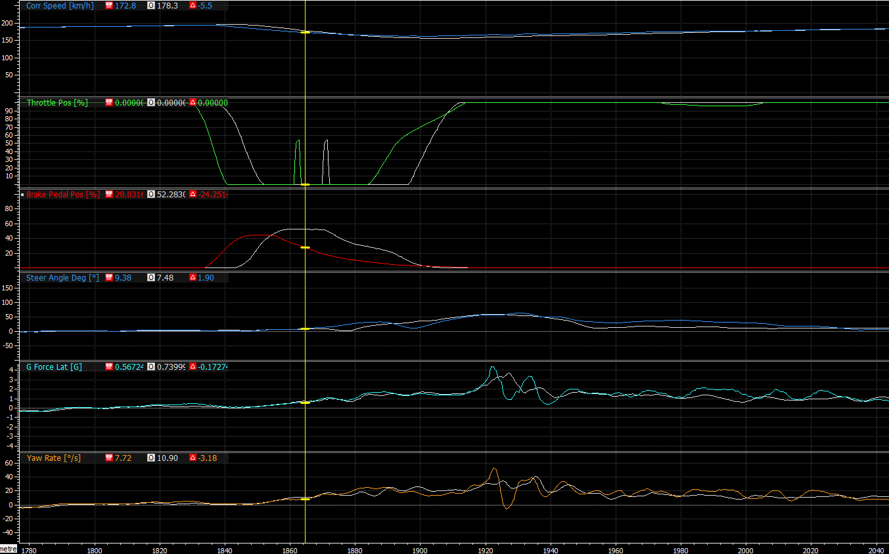
Turn 5 data comparison
Key Observations:
❌ Trail Braking Mistake
Slower lap: braking error requires steering correction during trail braking phase (cursor marks turn-in). Significantly decreases apex speed
⚡ Early Throttle Critical
Faster lap benefits significantly from earlier, softer braking enabling early throttle application
⚠️ Curb Attack
Faster lap attacks exit curb too harshly (visible in lateral G), requires slight corrections. Neither lap perfect but slower lap's mistake causes larger time loss
Turns 6-7 (Corkscrew)
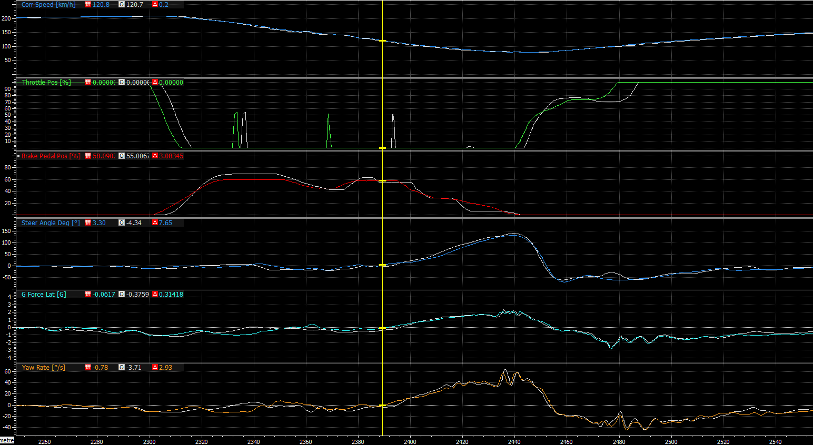
Turns 6-7 (Corkscrew) data comparison
Key Observations:
⏬ Downshift Timing
Faster lap downshifts much sooner for optimal engine braking. Slower lap's late downshift misses braking assistance
🐌 Identical Min Speed
Both achieve same minimum speed through elevation changes. Similar steering technique through direction changes
⚡ Exit Acceleration
Earlier throttle application creates key advantage. Timing difference on throttle = measurable lap time gain
Turn 8
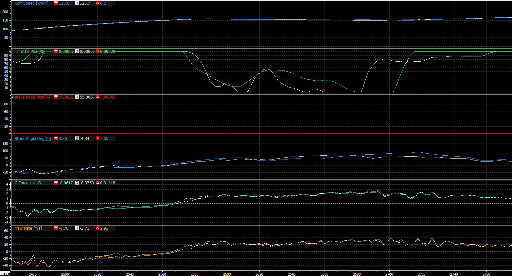
Turn 8 data comparison
Key Observations:
🛣️ Front Axle Feel
Faster lap closes racing line earlier with more aggressive approach → stays on gas longer → higher minimum speed
🌀 Opposite Camber
Track pushes car wide causing significant understeer. Identical G-force on exit despite more aggressive steering = setup-limited
🔧 Setup Needed
Minimal lap differences—driver near optimal. Would benefit from more oversteering setup to help rotation
Turn 9
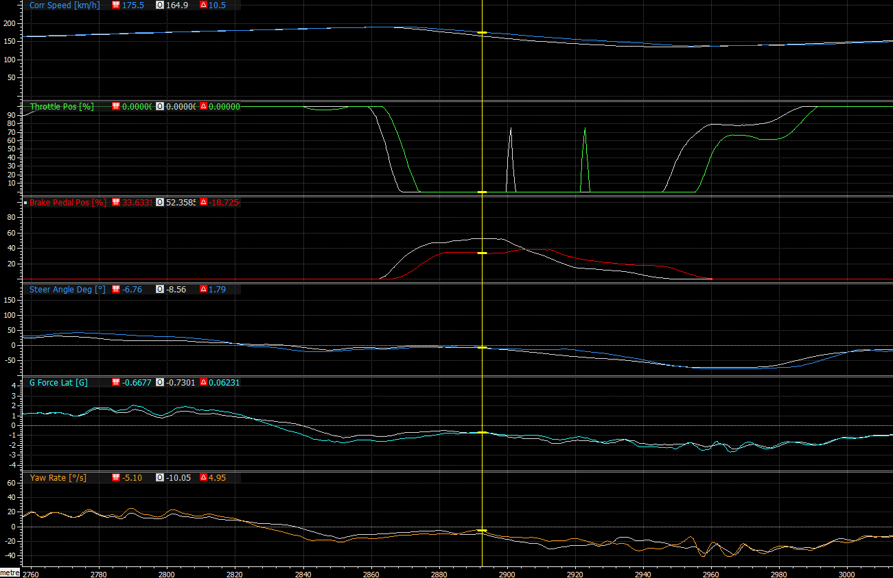
Turn 9 data comparison
Key Observations:
🏁 Banking Utilization
Faster lap: later, softer braking + later downshift → carries more speed to use banking for rotation. Higher minimum speed from added apex responsiveness
⚖️ Rotation Timing
Slower lap: more early rotation from aggressive steering. Faster lap: achieves rotation closer to apex via better braking but struggles to get on gas early
🌀 Disappearing Banking
Exit understeer on both laps (steering increases, G-force doesn't). Compounded by banking ending near corner exit
Turn 10
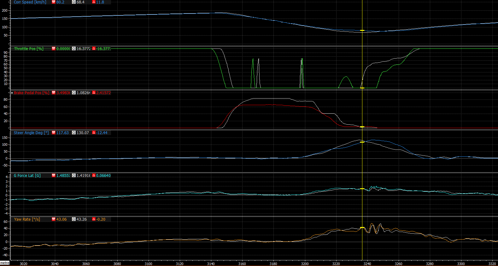
Turn 10 data comparison
Key Observations:
🔺 V-Shape vs U-Shape
Slower lap: V-shaped with lower min speed. Faster lap: U-shaped maintains corner speed with better trail braking